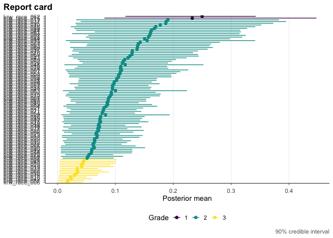

Firm-level estimates of discrimination are noisy, and the noise differs sharply across firms: some firms are measured from thousands of applications and others from a handful, so a raw ranking mostly sorts on sampling error. gradepath sorts firms by what the data actually support — pooling information across firms to shrink the noise, ordering them by posterior evidence, and assigning each one a discrete integer grade with an honest credible interval. It is a native-R replication of the discrimination-report-card analysis of Kline, Rose, and Walters (2024, AER), replacing the original Stata + R + Python + MATLAB + Gurobi pipeline with a single package.
The method in three steps
- Estimate. Standardize each firm’s discrimination estimate onto a common precision scale with a beta-GMM precision rule, so a firm measured from few applications is not mistaken for a confident outlier.
- Rank. Deconvolve the underlying prior across firms via empirical Bayes, shrink each firm’s estimate toward it, then build a pairwise posterior outranking matrix that records, for every pair, the probability that one firm is more discriminatory than the other.
- Grade. Solve a Bayes-risk integer program that turns those posterior comparisons into a small set of discrete grades, choosing how fine to grade by moving along an information-reliability frontier.
No equations here — see the Method vignettes (M1–M5) for the full notation and derivation.
Installation
# install.packages("remotes")
remotes::install_github("joonho112/gradepath")
# or clone: gh repo clone joonho112/gradepathThe grade integer program solves with Gurobi by default (the recommended backend; it needs a Gurobi license and gurobi_cl on your PATH) or falls back to the open, license-free HiGHS backend (several times slower on a real 97-firm solve). The package installs, loads, and passes its tests without any solver — you only need a backend when you run a live grade solve yourself.
A five-minute example
Conceptually, the whole pipeline is a single call. The grade step solves an integer program over all 97 firms (~3 min with Gurobi), so we do not run it inline here:
# Read the bundled per-firm beta-GMM series (97 firms; col 2 = theta_hat, col 3 = s).
gmm <- read.csv(system.file("extdata/krw-gmm-input/theta_estimates_matlab_race.csv",
package = "gradepath"), header = FALSE)
race <- list(theta_hat = gmm[[2]], s = gmm[[3]])
# The whole pipeline is one call. The grade step solves an integer program over
# 97 firms (~3 min with Gurobi), so we do not run it inline here:
fit <- krw_report_card(race, demographic = "race",
control = gp_control(backend = "gurobi",
precision_rule = "krw_gmm",
lambda_grid = c(0.25, 0.5, 1)))So that this page knits instantly and without a solver, gradepath ships the proven race result. Load it (no solve) and print it:
library(gradepath)
# gradepath ships the proven RACE result; load it instantly (no solve):
fit <- readRDS(system.file("extdata/cached/fit_race_parity.rds", package = "gradepath"))
fit
#> +------------------------------------------------------------------------+
#> | gp_fit . 97 units . grades: 3 (2/81/14) . selected lambda = 0.25 |
#> +------------------------------------------------------------------------+
#> | units : 97 |
#> | grades : 3 (2/81/14) |
#> | reliability: (1 - DR) = 0.96 tau-bar = 0.21 |
#> | backend : gurobi |
#> +------------------------------------------------------------------------+
#> i summary(fit) for backend/selection details; get_report_card(fit) for the ranked table.Then draw the report card for those 97 firms:

Reading the output: across 97 units, the analysis lands on 3 integer grades holding 2, 81, and 14 firms, at the KRW baseline lambda = 0.25. The reliability summary (1 - DR) = 0.96 says the grading reproduces the underlying posterior ordering with high fidelity, tau-bar = 0.21 summarizes the average spread within a grade, and the solve used the gurobi backend. Grade 1 is simply the most-extreme grade — an integer label in 1..n, here the two firms the data place farthest along the discrimination scale — not a verdict about any firm; the grades are a sorting by posterior evidence, and the credible intervals tell you how firmly each placement is supported.
Key features
- Native-R replication of the full Kline-Rose-Walters estimation core — beta-GMM precision standardization, empirical-Bayes deconvolution and shrinkage, the pairwise outranking matrix, the Bayes-risk grade integer program, and the information-reliability frontier — with no Stata, Python, MATLAB, or hand-offs between languages.
- Gurobi by default, with the open HiGHS backend so the workflow runs without a commercial license.
-
The four signature KRW figures as composable
ggplot2verbs (frontier, posterior contrast, report card, discordance). - Discrete integer-grade report cards with per-firm posterior credible intervals.
- A Monte-Carlo calibration harness for checking that the grades are well-calibrated.
- A two-level industry surface for grading industries as well as firms.
Vignettes
Applied track — run, read, and export:
| Article | Title |
|---|---|
| a1-getting-started | A1: Getting started — your first discrimination report card |
| a2-the-grading-workflow | A2: The grading workflow — from estimates to a report card |
| a3-reading-and-exporting-results | A3: Reading and exporting results |
| a4-figures | A4: The figure cookbook |
| a5-solvers-and-calibration | A5: Solvers and calibration |
Method track — the derivation behind each step:
| Article | Title |
|---|---|
| m1-foundations-and-notation | M1: Foundations and notation |
| m2-precision-and-standardization | M2: Precision and standardization |
| m3-deconvolution-and-posterior | M3: Deconvolution and posterior |
| m4-grading-frontier-and-report-cards | M4: Grading, the frontier, and report cards |
| m5-two-level-and-calibration | M5: Two-level industries and calibration |
Status and performance notes
This is a pre-release (v0.5.0, lifecycle experimental). The scoping below is exact — please read it before relying on results.
- The one-level race and gender core (M1) is accepted under a predeclared scoped policy. It recovers the published grade distributions (race 2 / 81 / 14, gender 1 / 3 / 89 / 4) as proven-optimal solves (
mip_gap = 0) at the KRW baselinelambda = 0.25, withbeta = 0.5095(race) andbeta = 1.2554(gender) matching the paper. - The two-level industry surface (M2) is partially accepted: exact industry grade counts are reproduced; some continuous rows rest on fixture-parity evidence rather than direct reproduction.
- Performance. The 97-firm grade integer program takes ~3 min with Gurobi; HiGHS is license-free but several times slower. No example in this README runs a live solve — the headline numbers load the bundled proven fit.
Citation
To cite gradepath, cite both the package and the method it replicates:
@Manual{gradepath,
title = {gradepath: Discrimination Report Cards via a Native Kline-Rose-Walters Core},
author = {JoonHo Lee},
year = {2026},
note = {R package version 0.5.0},
url = {https://joonho112.github.io/gradepath/},
}
@Article{kline2024discrimination,
title = {A Discrimination Report Card},
author = {Patrick Kline and Evan K. Rose and Christopher R. Walters},
journal = {American Economic Review},
year = {2024},
volume = {114},
number = {8},
pages = {2472--2525},
doi = {10.1257/aer.20230700},
}Related work
- ebrecipe supplies the low-level empirical-Bayes primitives (prior deconvolution and posterior shrinkage) that gradepath builds on behind a controlled seam — as an input container plus a one-level cross-check, not a stage orchestrator.
- drrank is the original authors’ reference implementation of the grade-optimization step for A Discrimination Report Card; gradepath reproduces that step natively in R rather than calling out to it.
Getting help
Found a problem, or have a question? Please open an issue at https://github.com/joonho112/gradepath/issues.
License
MIT © JoonHo Lee. See LICENSE.md.
Created and maintained by JoonHo Lee (ORCID 0009-0006-4019-8703), Assistant Professor, The University of Alabama (jlee296@ua.edu).